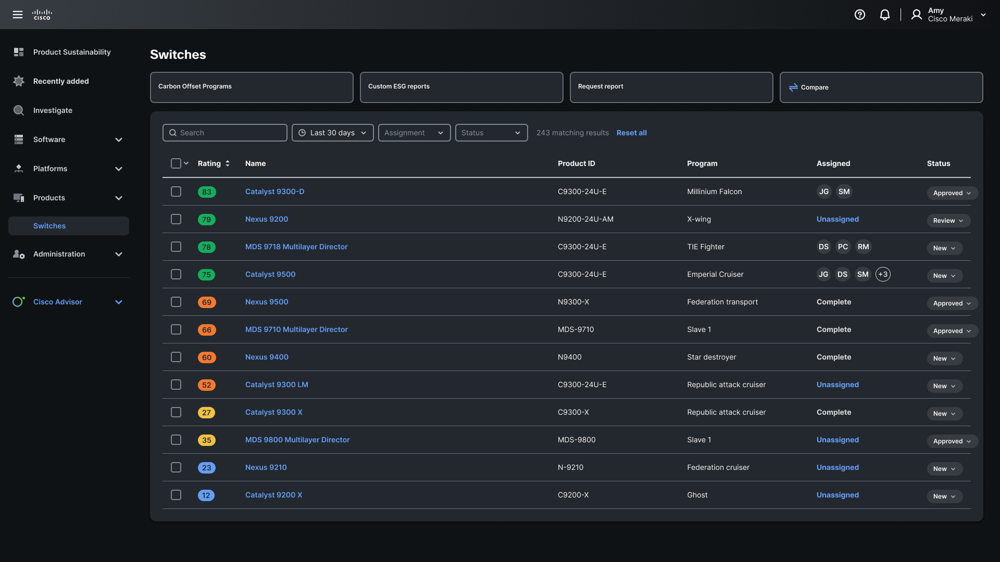

AI for Pain Point Reduction
The product dashboard needed to be overhauled to be used by other teams to extract power and material information. In lieu of a redesign, I created an AI assistant proof of concept to help teams quickly extract and format sustainability data from the complex product database. As one product manager noted, "What used to take weeks now could take minutes."
